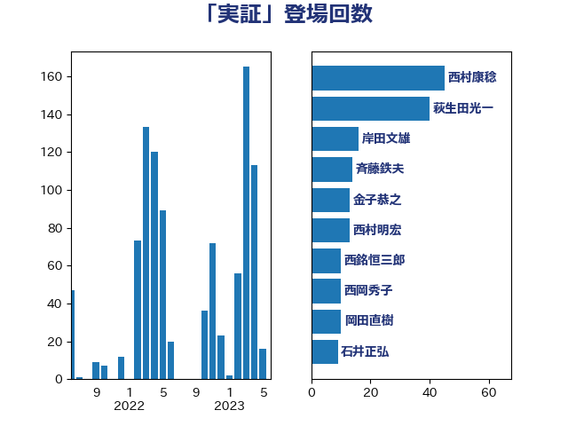

単語「実証」

| 西村康稔 | 自由民主党 | 45 回 |
| 萩生田光一 | 自由民主党 | 40 回 |
| 岸田文雄 | 自由民主党 | 16 回 |
| 斉藤鉄夫 | 公明党 | 14 回 |
| 金子恭之 | 自由民主党 | 13 回 |
| 西村明宏 | 自由民主党 | 13 回 |
| 西銘恒三郎 | 自由民主党 | 10 回 |
| 西岡秀子 | 国民民主党 | 10 回 |
| 岡田直樹 | 自由民主党 | 10 回 |
| 石井正弘 | 自由民主党 | 9 回 |
| 山口壯 | 自由民主党 | 9 回 |
| 大島敦 | 立憲民主党 | 9 回 |
| 高市早苗 | 自由民主党 | 8 回 |
| 野村哲郎 | 自由民主党 | 8 回 |
| 武部新 | 自由民主党 | 8 回 |
| 加藤勝信 | 自由民主党 | 8 回 |
| 仁木博文 | 無所属 | 8 回 |
| 中谷真一 | 自由民主党 | 8 回 |
| 松本剛明 | 自由民主党 | 7 回 |
| 音喜多駿 | 日本維新の会 | 6 回 |
| 里見隆治 | 公明党 | 6 回 |
| 細田健一 | 自由民主党 | 6 回 |
| 永岡桂子 | 自由民主党 | 6 回 |
| 武田良太 | 自由民主党 | 6 回 |
| 横山信一 | 公明党 | 6 回 |
| 岩渕友 | 日本共産党 | 6 回 |
| 安江伸夫 | 公明党 | 6 回 |
| 若宮健嗣 | 自由民主党 | 5 回 |
| 末松信介 | 自由民主党 | 5 回 |
| 寺田稔 | 自由民主党 | 5 回 |
| 宮崎雅夫 | 自由民主党 | 5 回 |
| 中村裕之 | 自由民主党 | 5 回 |
| 下条みつ | 立憲民主党 | 5 回 |
| 高橋光男 | 公明党 | 4 回 |
| 野中厚 | 自由民主党 | 4 回 |
| 豊田俊郎 | 自由民主党 | 4 回 |
| 秋葉賢也 | 自由民主党 | 4 回 |
| 梶山弘志 | 自由民主党 | 4 回 |
| 川田龍平 | 立憲民主党 | 4 回 |
| 山崎誠 | 立憲民主党 | 4 回 |
| 堂故茂 | 自由民主党 | 4 回 |
| 吉井章 | 自由民主党 | 4 回 |
| 古川元久 | 国民民主党 | 4 回 |
| 馬場雄基 | 立憲民主党 | 3 回 |
| 阿部知子 | 立憲民主党 | 3 回 |
| 遠藤良太 | 日本維新の会 | 3 回 |
| 赤羽一嘉 | 公明党 | 3 回 |
| 角田秀穂 | 公明党 | 3 回 |
| 藤木眞也 | 自由民主党 | 3 回 |
| 米山隆一 | 立憲民主党 | 3 回 |
| 石川博崇 | 公明党 | 3 回 |
| 矢倉克夫 | 公明党 | 3 回 |
| 田畑裕明 | 自由民主党 | 3 回 |
| 田村智子 | 日本共産党 | 3 回 |
| 渡辺博道 | 自由民主党 | 3 回 |
| 岡本あき子 | 立憲民主党 | 3 回 |
| 小泉進次郎 | 自由民主党 | 3 回 |
| 小林鷹之 | 自由民主党 | 3 回 |
| 勝俣孝明 | 自由民主党 | 3 回 |
| 佐藤啓 | 自由民主党 | 3 回 |
| 三浦信祐 | 公明党 | 3 回 |
| 高野光二郎 | 自由民主党 | 2 回 |
| 高橋千鶴子 | 日本共産党 | 2 回 |
| 鈴木義弘 | 国民民主党 | 2 回 |
| 鈴木俊一 | 自由民主党 | 2 回 |
| 谷川とむ | 自由民主党 | 2 回 |
| 笠井亮 | 日本共産党 | 2 回 |
| 石井拓 | 自由民主党 | 2 回 |
| 牧山ひろえ | 立憲民主党 | 2 回 |
| 湯原俊二 | 立憲民主党 | 2 回 |
| 浜田靖一 | 自由民主党 | 2 回 |
| 浜口誠 | 国民民主党 | 2 回 |
| 浅田均 | 日本維新の会 | 2 回 |
| 河野太郎 | 自由民主党 | 2 回 |
| 池畑浩太朗 | 日本維新の会 | 2 回 |
| 斎藤アレックス | 国民民主党 | 2 回 |
| 打越さく良 | 立憲民主党 | 2 回 |
| 市村浩一郎 | 日本維新の会 | 2 回 |
| 小沢雅仁 | 立憲民主党 | 2 回 |
| 塩田博昭 | 公明党 | 2 回 |
| 塩川鉄也 | 日本共産党 | 2 回 |
| 堀場幸子 | 日本維新の会 | 2 回 |
| 城井崇 | 立憲民主党 | 2 回 |
| 中谷一馬 | 立憲民主党 | 2 回 |
| 中西祐介 | 自由民主党 | 2 回 |
| 下野六太 | 公明党 | 2 回 |
| 上田清司 | 国民民主党 | 2 回 |
| ながえ孝子 | 無所属 | 2 回 |
| 齋藤健 | 自由民主党 | 1 回 |
| 高橋はるみ | 自由民主党 | 1 回 |
| 馬場伸幸 | 日本維新の会 | 1 回 |
| 須藤元気 | 無所属 | 1 回 |
| 阿部司 | 日本維新の会 | 1 回 |
| 阿達雅志 | 自由民主党 | 1 回 |
| 門山宏哲 | 自由民主党 | 1 回 |
| 長妻昭 | 立憲民主党 | 1 回 |
| 鈴木敦 | 国民民主党 | 1 回 |
| 金子恵美 | 立憲民主党 | 1 回 |
| 金城泰邦 | 公明党 | 1 回 |
| 西田昭二 | 自由民主党 | 1 回 |
| 若松謙維 | 公明党 | 1 回 |
| 舟山康江 | 国民民主党 | 1 回 |
| 竹内真二 | 公明党 | 1 回 |
| 穀田恵二 | 日本共産党 | 1 回 |
| 福島伸享 | 無所属 | 1 回 |
| 福島みずほ | 社会民主党 | 1 回 |
| 神谷裕 | 立憲民主党 | 1 回 |
| 石井啓一 | 公明党 | 1 回 |
| 田村貴昭 | 日本共産党 | 1 回 |
| 田村憲久 | 自由民主党 | 1 回 |
| 田村まみ | 国民民主党 | 1 回 |
| 田名部匡代 | 立憲民主党 | 1 回 |
| 田中健 | 国民民主党 | 1 回 |
| 片山さつき | 自由民主党 | 1 回 |
| 漆間譲司 | 日本維新の会 | 1 回 |
| 浅野哲 | 国民民主党 | 1 回 |
| 河西宏一 | 公明党 | 1 回 |
| 櫻井周 | 立憲民主党 | 1 回 |
| 梅谷守 | 立憲民主党 | 1 回 |
| 梅村聡 | 日本維新の会 | 1 回 |
| 梅村みずほ | 日本維新の会 | 1 回 |
| 柴田巧 | 日本維新の会 | 1 回 |
| 柚木道義 | 立憲民主党 | 1 回 |
| 柘植芳文 | 自由民主党 | 1 回 |
| 松下新平 | 自由民主党 | 1 回 |
| 本村伸子 | 日本共産党 | 1 回 |
| 本庄知史 | 立憲民主党 | 1 回 |
| 末松義規 | 立憲民主党 | 1 回 |
| 木村次郎 | 自由民主党 | 1 回 |
| 掘井健智 | 日本維新の会 | 1 回 |
| 平林晃 | 公明党 | 1 回 |
| 岩田和親 | 自由民主党 | 1 回 |
| 山添拓 | 日本共産党 | 1 回 |
| 山本太郎 | れいわ新選組 | 1 回 |
| 山岡達丸 | 立憲民主党 | 1 回 |
| 山口晋 | 自由民主党 | 1 回 |
| 小沼巧 | 立憲民主党 | 1 回 |
| 小倉將信 | 自由民主党 | 1 回 |
| 宮本徹 | 日本共産党 | 1 回 |
| 國重徹 | 公明党 | 1 回 |
| 吉田統彦 | 立憲民主党 | 1 回 |
| 吉田はるみ | 立憲民主党 | 1 回 |
| 古川禎久 | 自由民主党 | 1 回 |
| 加田裕之 | 自由民主党 | 1 回 |
| 住吉寛紀 | 日本維新の会 | 1 回 |
| 伊藤渉 | 公明党 | 1 回 |
| 伊藤孝恵 | 国民民主党 | 1 回 |
| 井坂信彦 | 立憲民主党 | 1 回 |
| 中川郁子 | 自由民主党 | 1 回 |
| 中川宏昌 | 公明党 | 1 回 |
| 中司宏 | 日本維新の会 | 1 回 |
| 世耕弘成 | 自由民主党 | 1 回 |
| 一谷勇一郎 | 日本維新の会 | 1 回 |